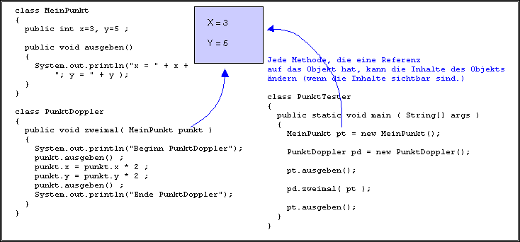

Antwort:
x = 3; y = 5 Beginn PunktDoppler x = 3; y = 5 x = 6; y = 10 Ende PunktDoppler x = 6; y = 10
x = 3; y = 5 Beginn PunktDoppler x = 3; y = 5 x = 6; y = 10 Ende PunktDoppler x = 6; y = 10
Hier sind einige Fakten:

Diese Fakten sind bei Call-By-Value konsistent. Der "Wert" ist die Referenz auf das Objekt. Die aufgerufene Methode hat ihre eigene Kopie dieses Werts und kann die Kopie der aufrufenden Methode nicht ändern. Aber, sie kann das Objekt ändern.
Natürlich, sogar wenn eine Methode eine Referenz auf ein Objekt hat, kann das Objekt nur geändert werden, wenn das Objekt Änderungen erlaubt (entweder durch öffentliche Instanzvariablen oder durch Zugriffsmethoden).
Betrachten Sie die Definition der MeinPunkt Klasse.
Überlegen Sie sich einen Weg, um MeinPunkt-Objekte unveränderbar zu machen.